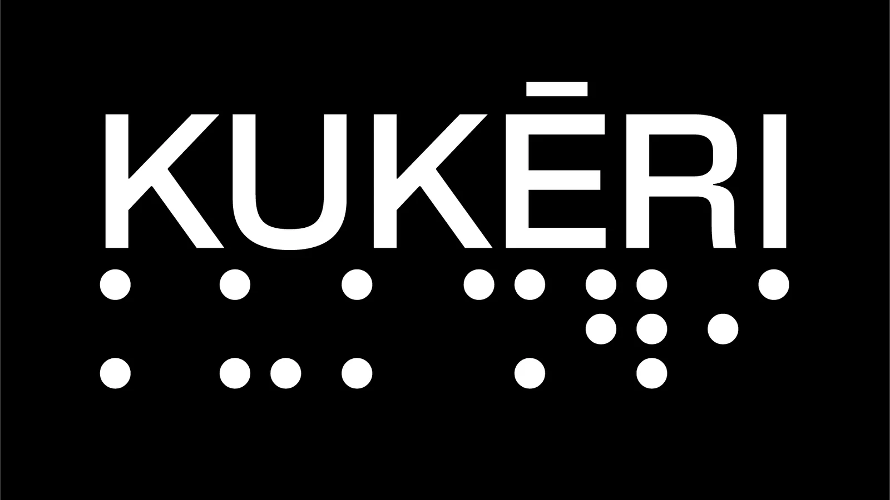
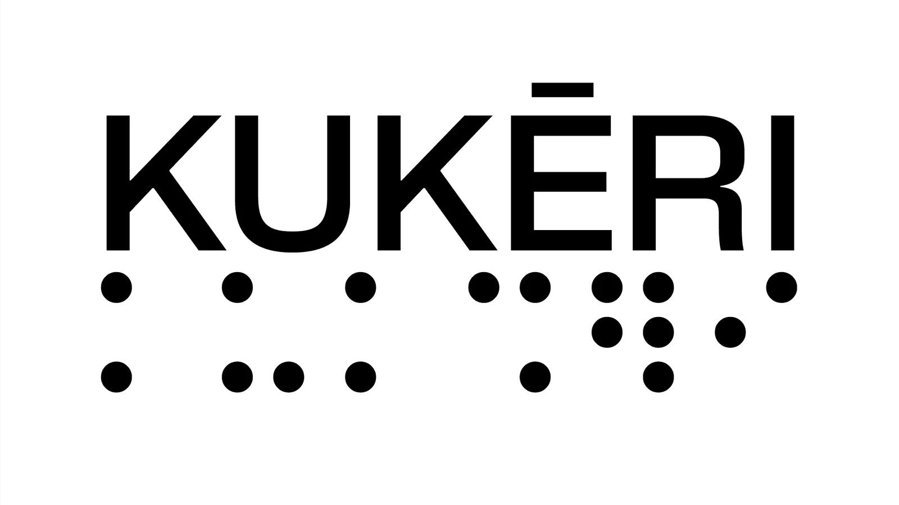
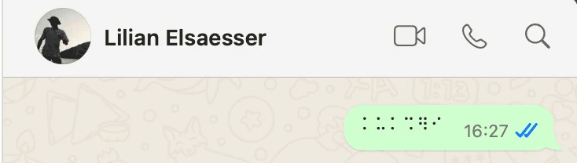
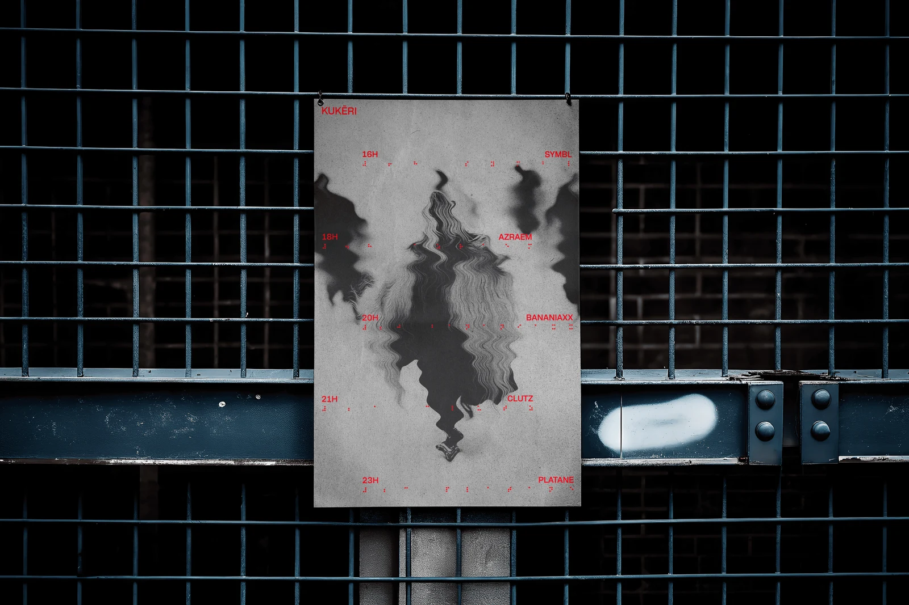
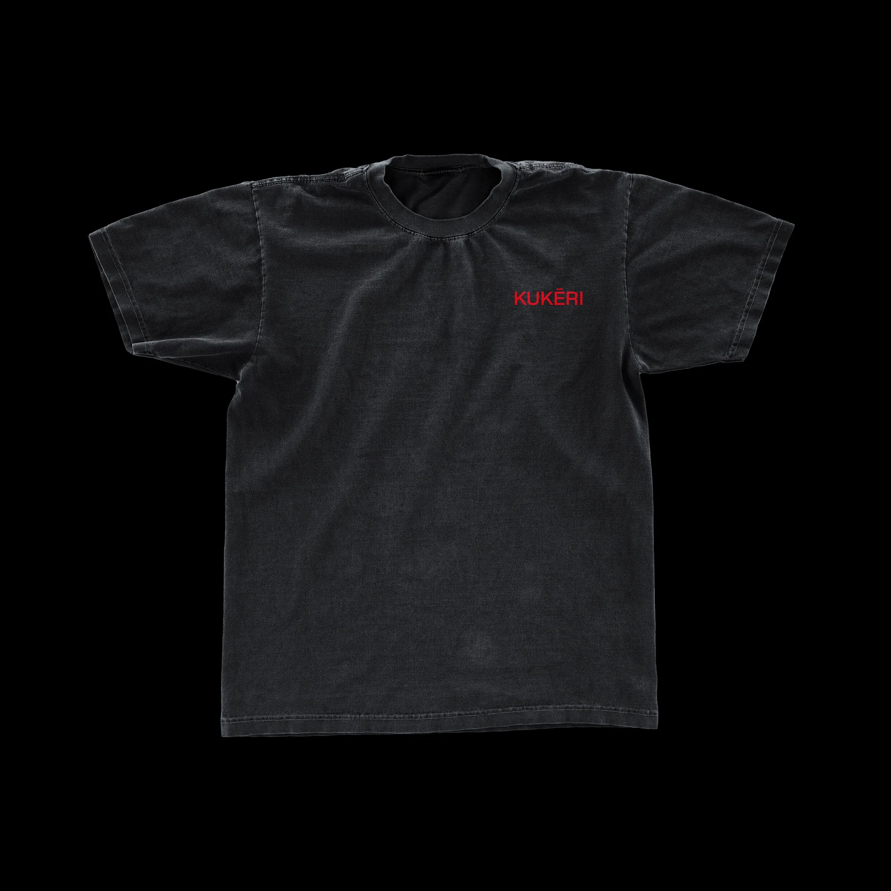
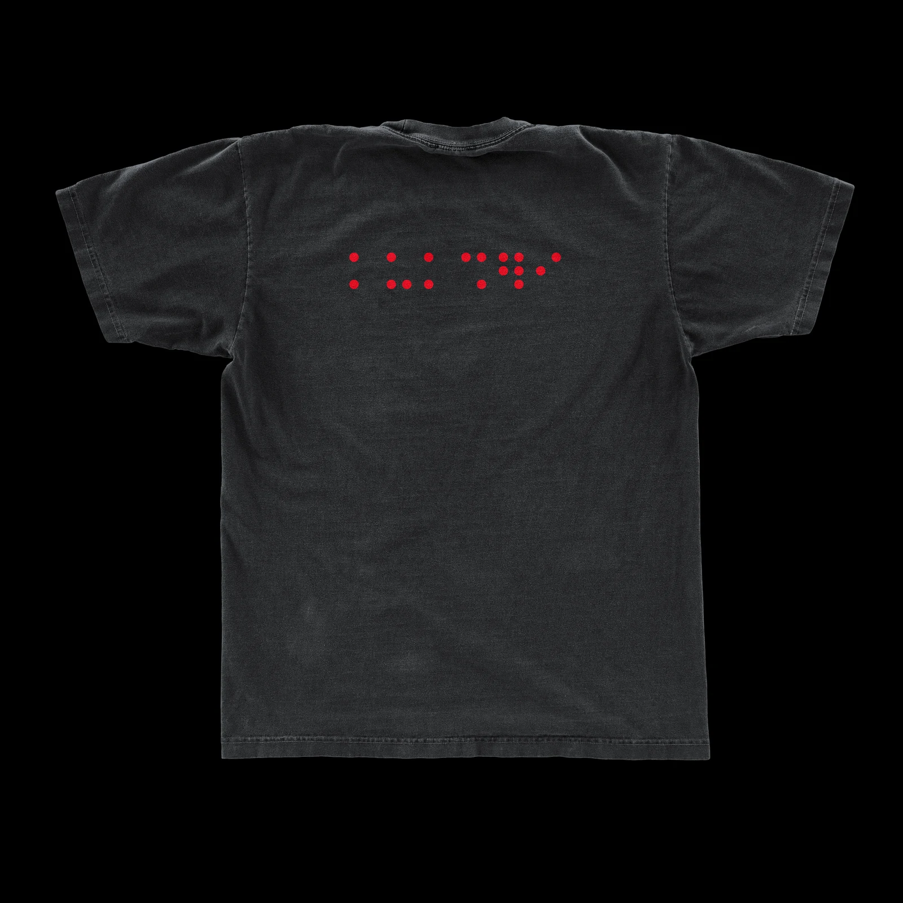
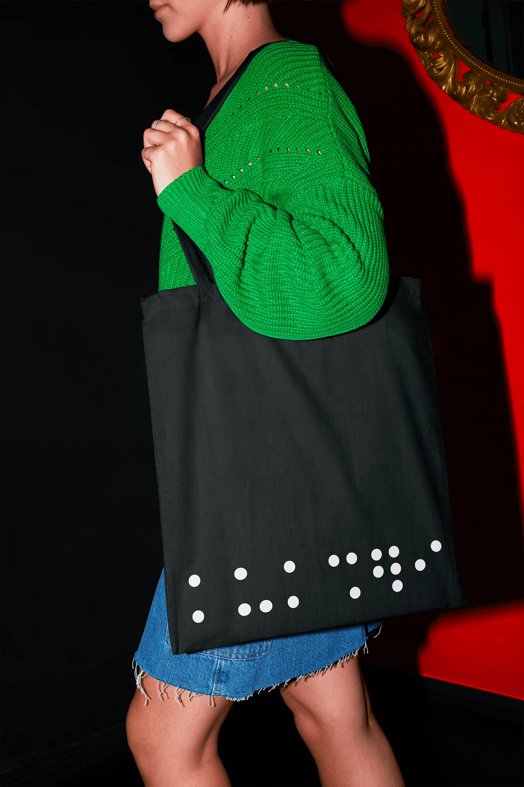
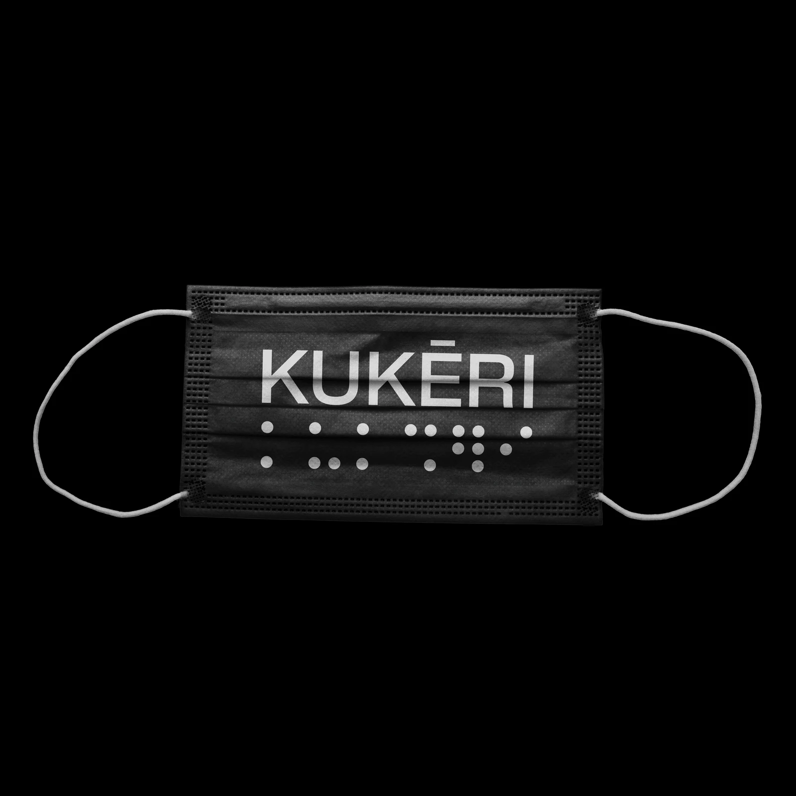
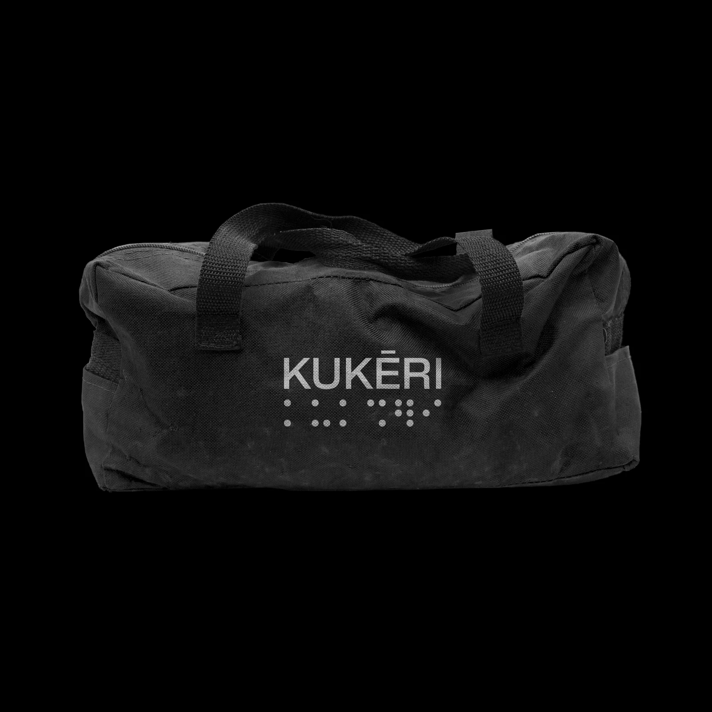

KUKĒRI
BRAND IDENTITY
2025
L'identité visuelle du collectif KUKĒRI a été conçue comme une immersion dans un rituel moderne, où la musique techno devient une expérience brute et viscérale capable de faire vibrer les murs et les corps. Le concept puise sa force dans l'analogie avec les Kukeri, ces rituels anciens bulgares où des hommes costumés font résonner des cloches pour chasser les mauvais esprits. À l'image de cette tradition qui transforme l'espace par le son, l’identité de KUKĒRI accompagne des événements où les rythmes hypnotiques et les basses profondes se muent en incantations sacrées, invitant le public à ne pas simplement écouter, mais à toucher la musique. Le cœur de cette identité repose sur l’utilisation du braille comme langage graphique et symbolique. Ce choix n'est pas fortuit : le braille crée un espace à part, une écriture codée où les sons s'impriment plus qu'ils ne se lisent. Il renforce l'idée d'un espace fermé et intimiste où l'on vient pour ressentir l'expérience sonore plutôt que pour l'apparence. À l'instar de la structure répétitive de la techno, le braille invite à une double lecture où l'on perçoit l'essentiel avant de le comprendre, incitant à se laisser porter par la musique sans chercher à en analyser chaque note. Sur le plan formel, l’identité traduit la froideur hypnotique de la techno minimaliste à travers des lignes épurées et des motifs en mouvement. Le logo lui-même, simple et chargé de sens, adopte un format texte qui permet une diffusion directe et organique. Cette esthétique de la « brutalité abstraite » utilise des formes géométriques et des cercles mouvants pour évoquer la mécanique du son et la vibration des ondes dans l'espace. En misant sur ce système codé et mystérieux, KUKĒRI crée une transe collective où la communication visuelle devient le reflet d'un rituel contemporain, transformant chaque lieu par la puissance du son et de la connexion humaine.








